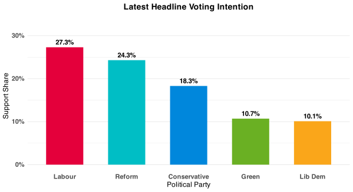
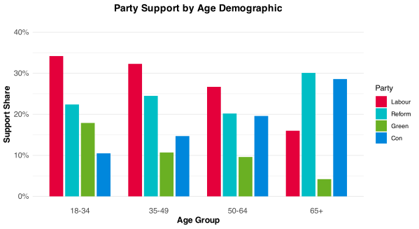
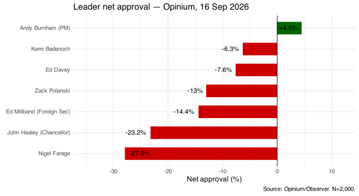

Published September 16, 2026
1. Labour's 3-point lead is real but still soft. Raw VI has them at 22.8% before filtering, and the vote flow shows 2024 Green-to-Labour migration driving much of the gain.
2. Burnham in net positive is a political landmark. The first time in this series a governing leader has achieved it. It is narrow, partisan, and fragile — but it is there.
3. The Reform donation story has extraordinary cut-through. 79.5% heard it and the public reaction is overwhelmingly negative. It has not yet moved VI. Whether that translates into political damage depends entirely on whether a cap is legislated — and on this poll, 54% of the public think it should be.

Labour lead by 3 points — slightly wider than FON's 2-point gap from the same day — consistent with Opinium's methodology producing higher Labour figures than most houses. The raw (pre-filter) VI has Labour at 22.8% and Reform at 20.3%, with a 14.2% don't-know rate: the filter adds roughly 4-5 points to both parties.
The 2024 GE vote crossbreak tells the important story. Labour retain 68% of their 2024 voters — a significant improvement from earlier in the year when retention was in the high forties. Of 2024 Green voters, 10% are now with Labour and 71.5% are holding. Reform retain 83.5% of their 2024 voters and are picking up 21.5% of 2024 Conservatives — the Tory bleed to Reform remains a slow but consistent structural feature.
The EU referendum crossbreak is illuminating. Among Remain voters: Labour 35.6%, Green 12.2%, Lib Dem 15.7%, Reform 10.1%. Among Leave voters: Reform 40.4%, Conservative 23.3%, Labour 16.1%. The Brexit axis continues to be the strongest single predictor of current vote. Reform's 40% among Leave voters is dominant. Labour's 16% among Leave is the number they need to grow if they want to win seats in Leave-heavy areas.

Labour lead every age group up to 65. Note Opinium's wide 18-34 bracket (vs FON's 18-29 and 30-39 split) compresses the Green youth signal — 17.9% here against 27.2% among 30-39 year olds in FON. These numbers are not contradictory: they're measuring slightly different populations.
Gender: Reform +9 male (28.8% vs 19.8%). Labour essentially gender-neutral (25.8% male, 28.9% female, slight female skew). Green female-skewed (7.9% male, 12.9% female).
The headline finding from seven leader ratings: Andy Burnham is the only leader with a net positive approval at +4.5%. Every other leader is net negative.

Burnham's +4.5 national net conceals sharp partisan splits: Labour voters give him +68.6, Reform voters give him -45.6. He is deeply polarising but has managed to be the first governing leader to break into net positive territory in this series. Farage at -27.9 is consistent with other houses — net positive among Reform voters (+68.6) but generating intense antipathy beyond his coalition (Labour voters -56.6).
John Healey at -23.2 as Chancellor is a problem for the government. His approval among Labour's own voters is barely net negative (-2.0) — his own side is lukewarm, and everyone else is hostile. The Chancellor has not yet established public confidence.
Opinium test two best-PM questions — one against Badenoch only, one against Farage. Both show Burnham ahead but with "none of these" as a significant third option.
Burnham vs Badenoch: Burnham 37.8%, Badenoch 19.1%, None 28.6%, DK 14.4% Burnham vs Farage: Burnham 43.4%, Farage 23.9%, None 23.1%, DK 9.6%
Burnham performs better in the Farage pairing — the forced choice against Farage consolidates more of the non-Reform electorate behind him than the Badenoch pairing does. This is the tactical opposition dynamic: voters who are sceptical of Burnham are more likely to hold their nose and back him against Farage than against a mainstream Conservative.
The news tracker confirms Reform's £72m cryptocurrency donation was the week's top story — 79.5% of respondents had heard at least something about it, the highest of any topic. The public response is unambiguous.
On whether donations of £36m from one individual are acceptable: Mostly or completely unacceptable: 46.5%. Mostly or completely acceptable: 20.3%.
On what should happen to Reform's £72m specifically: 46.9% say introduce a cap and apply it retrospectively (meaning Reform would have to return the money). Only 14.1% say allow it with no new cap. A further 21.6% support a future cap but not retrospective application.
The crypto dimension makes it worse: 38.6% say knowing the donations came from cryptocurrency wealth makes them more concerned. Only 4.5% say less concerned.
The Reform donor story has not moved the VI needle materially — Reform is still at 24.3% in this poll. But the public attitude to the donations is strongly negative, and a cap on donations supported by 54.2% of respondents (strongly + somewhat) represents a clear democratic mandate that parliament will find difficult to ignore.
Immigration is at 67.4% "too high" nationally — consistent with every other poll. On which government would handle immigration best: Labour 23.9%, Conservative 17.0%, Neither 41.7%, Not sure 17.4%. Labour narrowly lead the Conservatives on their management of a hostile issue — a meaningful shift from the period when immigration was toxic for any governing party.
The House of Commons voted against the Assisted Dying Bill. 53.3% of the public say this was the wrong decision (probably + definitely). 27.0% say it was right. The gap is large and crosses party lines — this is not a partisan issue but a public-versus-parliament one. There is no majority for the MPs' position in any current-vote subgroup.
On UK sanctions targeting Israeli settlements: NET support 38.4% vs NET oppose 16.5% (22.7% neither, 22.3% don't know). Support is strongest among Labour voters and London. Reform voters are closer to the national average than their broader profile might suggest — this does not appear to be a strongly partisan issue in the way that, say, immigration is.
--------------------------
Analysis based on Opinium data for The Observer, fieldwork 16 September 2026. N=2,000 UK adults (GB for VI). Headline VI N=1,488.